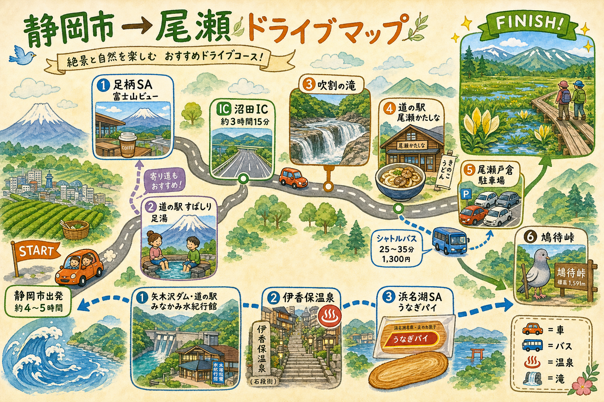

片道 約4〜5時間 ｜ マイカー規制区間はシャトルバス利用

| ① 足柄SA | 東名途中。富士山ビューの休憩 |
|---|---|
| 道の駅 すばしり | 富士に近い道の駅・足湯（遠回り寄り道） |
| 沼田IC | 高速終点。ここから一般道（高速約3時間15分） |
| ② 吹割の滝 | 120号沿いの定番寄り道 |
| ③ 尾瀬かたしな | まいたけうどん・尾瀬直前の休憩 |
| ④ 尾瀬戸倉 駐車場 | ここで車を停める（1,000円/日） |
| シャトルバス | 鳩待峠まで25〜35分（片道約1,300円） |
| ⑤ 鳩待峠 | 登山口 |
| ⑥ 尾瀬ヶ原 | ゴール。木道と湿原 |
| 帰路 | 八ッ場ダム → 伊香保温泉 → 浜名湖SA → 静岡 |